项目与文档
LemmaLoom 把你的所有工作都保存在项目中。一个项目包含你的文档，以及你在这些文档上添加的编码、编码实例、备忘录和链接。你用来整理和分析这些文档的文档集、分组、属性、词典和已存储的查询，也保存在项目中。一般来说，最好把一项研究的所有相关材料都放在同一个项目中。LemmaLoom 的大多数视图一次只涵盖一个项目。
本章的示例全部取自示例项目“气候辩论”。“气候辩论”包含十一篇讨论气候变化的虚构文本，有评论文章、专栏、博客文章和一篇演讲；其中六篇出自活动人士之手（例如“时间不多了”），五篇出自怀疑论者之手（例如“模型总是失准”）。“气候辩论”中另外还有三个文档。“2024 热浪报告”是一个 PDF 文件，“碳税之争”是一篇从网上导入的新闻报道，“电台辩论”则是一场经过录音和转写的电台辩论。最后，“时间不多了 (英语)”是“时间不多了”的译文。因此，项目中一共有 15 个文档。你也可以直接在 LemmaLoom 中查看这个项目。选取文件 ▸ 导入 ▸ 示例项目，把它以界面所用的语言添加为新项目。LemmaLoom 会自动导入“气候辩论”项目，并把它设为当前项目。
基本概念
你定义的编码、文档集、分组、属性和词典都只属于各自的项目。标签和自定义分析器属于你的所有项目，为所有项目存储的查询也是如此。在项目中，一份材料就是一个文档。文档可以是纯文本文件、PDF 文档、网页，也可以是音频和视频录音的转写文本。翻译一个文档会生成另一个文档，称为译文（第 9 章“译文与分屏浏览”）；译文列在原文下方，并带有原文的所有标签。
分组的作用类似于导航栏中的文件夹；每个文档最多属于一个分组（也可以不属于任何分组）。分组主要用来让文档列表保持整齐。编码矩阵还可以按分组合并它的列，智能文档集和查询也可以按分组挑选文档。文档集是文档的集合，用来分析特定的文档，或者在几组文档之间进行比较。同一个文档可以属于任意多个文档集。智能文档集按指定的条件收录文档（例如“读者数”大于或等于 100,000），并会根据这些条件自动维护自己的内容。
标签（例如“评论”或“热门”）是你自己创建的名称。标签几乎可以表示对你的研究有意义的任何东西。项目、文档、编码、备忘录和链接共用同一份标签列表。属性是每个文档各自的特性（例如它的“立场”或“发表日期”）。属性一经定义，就适用于整个项目。
导航栏上部的项目视图栏显示十个视图，第一个是编码本，最后一个是查询。每个文档集和每个标签也能打开同样的这些视图，只涵盖其中的文档。范围指一个视图所处理的文档，可以是整个项目、一个文档集，或者带有某个标签的文档。
其中有几样东西的作用相互重叠，所以在开始实际分析之前，最好先弄清楚哪一样在什么情况下更合适。如果你打算按某项事实（例如立场或日期）比较文档，就把它定义为属性。文档集适合用来分析特定的文档（也就是限定范围）。如果某个属性或标签可以替你挑选这些文档，智能文档集会很方便。分组只用来整理列表。在每个项目中都应当表示同一含义的名称，就放在标签中。
在“气候辩论”中，“立场”被定义为属性，所以编码统计和编码矩阵可以按辩论双方细分结果。关键词列表比较的是文档集，为此项目中另外加入了“行动派”和“怀疑派”两个文档集。“纸媒”和“网络”是只用来整理列表的分组。标签“评论”表示一类文本。
导航栏
导航栏位于主窗口左侧。最上面是你的项目列表，下面是当前项目中的所有内容。点按工具栏左端的导航栏按钮，可以显示或隐藏导航栏。显示 ▸ 显示/隐藏导航栏（⌃⌘S）的作用相同。
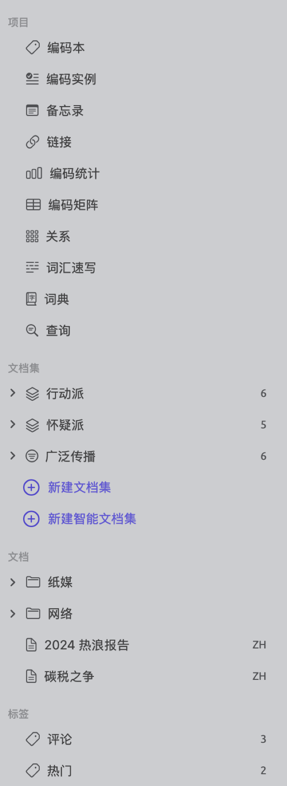
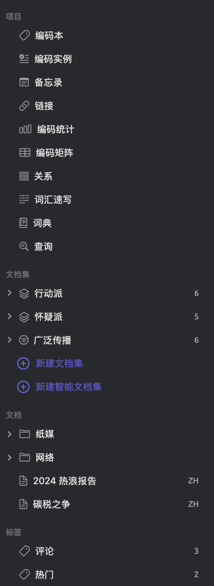
导航栏从上到下分为以下几个部分：
| 部分 | 列出的内容 |
|---|---|
| 收藏 | 你加了星标的项目。至少有一个项目被收藏后，这个部分才会出现。 |
| 项目 | 你的全部项目，按名称排序。当前项目的名称以粗体显示。 |
| 项目 | 当前项目的项目视图栏（见本章后文的项目视图栏）。 |
| 文档集 | 当前项目的文档集和智能文档集，各自附有文档数量，后面是新建文档集和新建智能文档集。 |
| 文档 | 先是当前项目的分组，然后是不属于任何分组的文档。译文列在原文下方。 |
| 标签 | 当前项目中文档上用到的每个标签，以及带有该标签的文档数量。至少有一个文档带有标签后，这个部分才会出现。 |
搜索文档栏位于最顶部，在所有内容的上方。你输入文字后，导航栏只列出当前项目中名称含有这些文字的文档。按下 Return 键会打开第一个结果，按向下箭头键可以进入列表。按下 Esc 键会清除输入的文字，导航栏重新完整显示。选取编辑 ▸ 查找文档（⇧⌘F），可以让隐藏的导航栏重新出现，并把插入点直接放进搜索栏。
每一行开头的图标表示文档的类型。音频文档的图标是声波，视频文档是一段胶片，文本、PDF 和网页文档则是一页纸。没有源文件的文档（例如从 REFI-QDA 项目导入的文本）显示为带铅笔的方块。你为文档设置的颜色也会用在它的图标上。每行末尾是两个字母的语言代码，例如 EN、DE 或 ZH（法语文本为 FR）；将鼠标指针悬停在代码上，可以看到语言的全称。代码旁边有一个状态图标，表示索引的完成程度。关于索引，请参阅第 21 章“分析与索引”。
| 状态图标 | 含义 |
|---|---|
| 无 | 文档已建立索引，可以用于所有分析。 |
| 进度环 | 文档正在建立索引，或者有分析器正在处理它。将鼠标指针悬停在进度环上，可以看到当前阶段和已完成的百分比。 |
| 虚线圆圈 | 等待建立索引。文档正在排队，索引会自动开始。 |
| 带暂停符号的圆圈 | 索引已关闭。文档导入时没有建立索引。在文档信息中点按立即建立索引即可开始（见本章后文的索引）。 |
| 带问号的圆圈 | 该语言不支持索引。你可以阅读和编码这个文档，但透镜、语法标签页和词汇速写需要英语、德语或中文文档。 |
| 红色警告三角形 | 建立索引失败。将鼠标指针悬停在三角形上，可以看到失败原因。要重试，请右键点按该文档并选取重试索引。 |


文档正在建立索引时，它在导航栏中的名称和图标显示为灰色。这时你已经可以打开和查看这个文档，并为它编码。索引完成后，透镜菜单和检查器中的语法标签页就可以使用了。
导入音频、视频或 PDF 文件时，文档部分的末尾会先出现一行，在文件成为可用的文档之前，这一行一直显示进度指示。翻译文档时，原文下方会出现类似的一行，显示目标语言和进度环。
项目
新建项目
“气候辩论”是为一项研究建立的项目，为其中的文档定义了四个属性。属性“立场”使用选择器数据类型。“立场”的值来自预先定义的列表“行动派”“怀疑派”和“中立”，这样可以保证值的写法一致。报告、新闻报道和电台辩论这三个文档的立场是“中立”。属性“读者数”存储整数，“发表日期”存储日期。“媒体”存储文本，因为它的值无法事先列出。如下图所示，对话框中只定义了这些属性中的前两个。
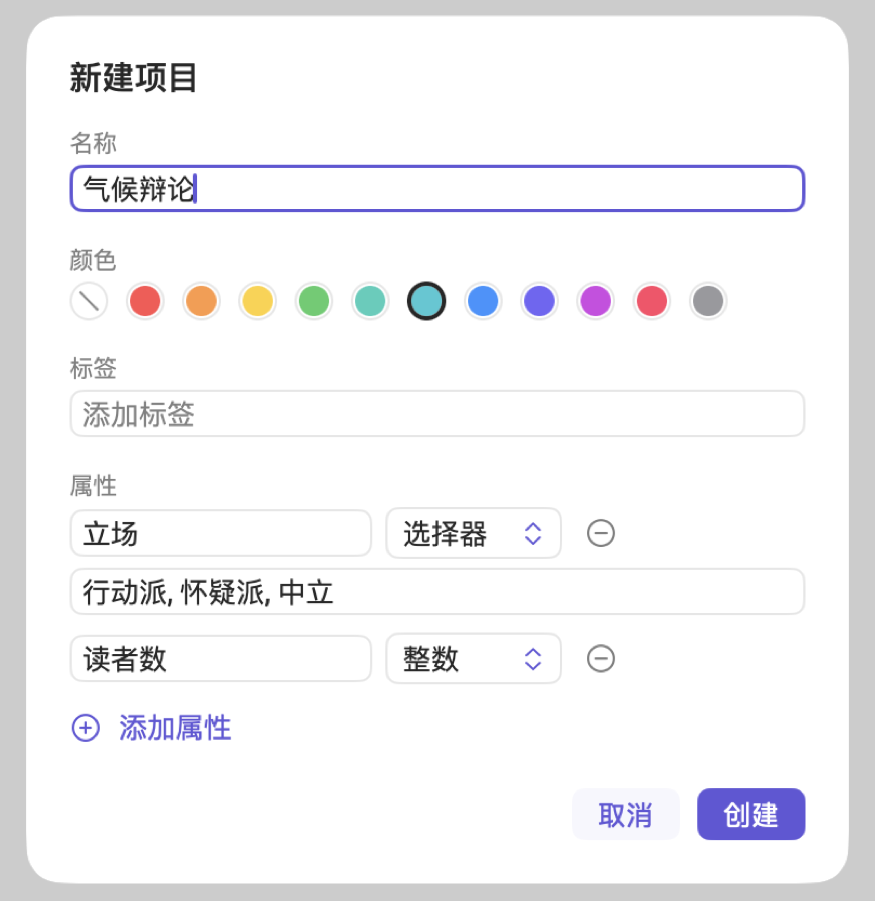
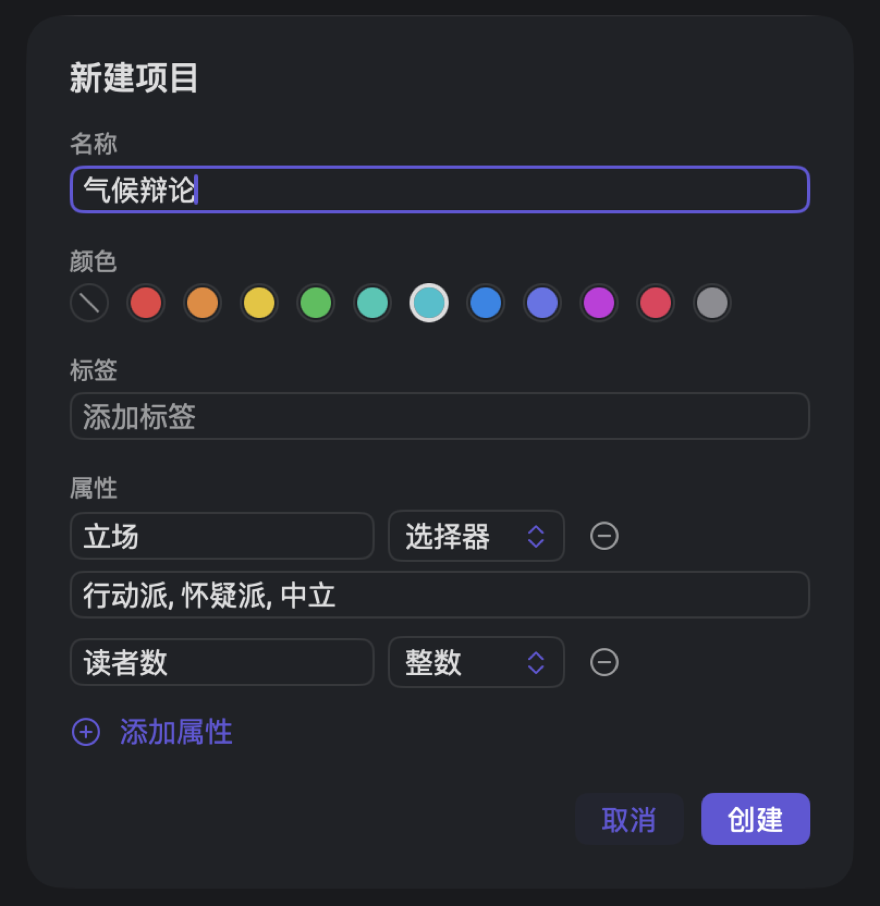
新建项目的步骤如下：
- 选取文件 ▸ 新建项目（⇧⌘N）。
- 在名称中输入项目名称。如果这一栏留空，项目会命名为新建项目。
- 要为项目设置颜色，请点按颜色旁边的一个色块。一开始选中的是第一个色块，即无颜色。
- 要为项目添加标签，请在标签中输入标签并按下 Return 键。输入英文逗号也会结束一个标签。
- 如果要现在设置属性，请在属性下为每个属性点按一次添加属性。输入属性名称，并选择它的类型。对于选择器，还要在下方逐行输入各个选项，每行一个。
- 点按创建，或按下 Return 键。
项目创建后，LemmaLoom 会把它设为当前项目。关于如何把文档放进项目，请参阅第 4 章“导入资料”。
属性有六种类型。文本存储文本，日期存储日期，整数存储整数，小数存储带小数部分的数，布尔值表示是或否并使用复选框，选择器存储从固定列表中选出的一项。第 8 章“文档集、分组、标签和属性”中的属性类型说明了如何根据用途选择合适的属性类型。输入属性名称时，自动补全会从你的各个项目中建议已有的属性。如果名称与其中某个属性相同，它的类型和选项会自动沿用过来。以后也可以通过项目信息或文档信息添加新属性，或者直接在属性窗口（项目 ▸ 属性）中添加。关于文档如何获得属性值，请参阅第 8 章“文档集、分组、标签和属性”。
导出的 LemmaLoom 项目可以用作备份，也可以与同事共享。要载入这样的项目，请选取文件 ▸ 导入 ▸ LemmaLoom 归档。也可以通过文件 ▸ 导入 ▸ REFI-QDA 项目导入，这会载入在其他支持 REFI-QDA 标准的软件中创建的项目。你还可以在访达中用 LemmaLoom 打开 .llz 或 .qdpx 文件，以同样的方式导入。关于这两种格式的详细说明，请参阅第 22 章“交换与导出”。
在项目之间切换
在项目或收藏下点按任意一个项目的名称，即可把它设为当前项目。选中后，导航栏的其余部分会显示这个项目的视图栏、文档集、文档和标签。
你会直接回到原来的位置，首先打开的是退出 LemmaLoom 之前最后使用的项目。每个项目都有自己的标签页；再次回到某个项目时，这些标签页都会恢复，离开时所在的标签页也会重新成为当前标签页。此外，这个项目中每个打开的文档都会恢复它启用的透镜和滚动位置。在分屏浏览中与它一同打开的另一个文档也会重新打开，检查器的状态也是如此。
收藏
项目也可以列在导航栏的顶部。将鼠标指针悬停在项目下的项目条目上，然后点按该行右侧出现的星形图标。加了星标的项目随后也会出现在另一个名为收藏的部分中。再次点按星形，或者使用项目的快捷菜单，可以把项目从收藏中移除。
项目的快捷菜单
右键点按或按住 Control 键点按一个项目时，快捷菜单中会出现以下命令：
| 命令 | 作用 |
|---|---|
| 添加到收藏、从收藏中移除 | 为项目加上或去掉星标。 |
| 重命名 | 把名称变成文本框。输入新名称后按下 Return 键；按下 Esc 键则保留原名。编辑 ▸ 撤销重命名（⌘Z）可以恢复原名。 |
| 信息 | 打开项目信息（见下文的项目信息）。 |
| 属性 | 打开属性窗口，这是一张列出每个文档属性值的表格。见第 8 章“文档集、分组、标签和属性”中的属性窗口。 |
| 编码本 | 在编码本窗口中打开项目的编码本。 |
| 词汇速写 | 为整个项目打开词汇速写窗口。见第 12 章“词汇速写”。 |
| 删除项目 | 确认后删除项目（见下文的删除项目）。 |
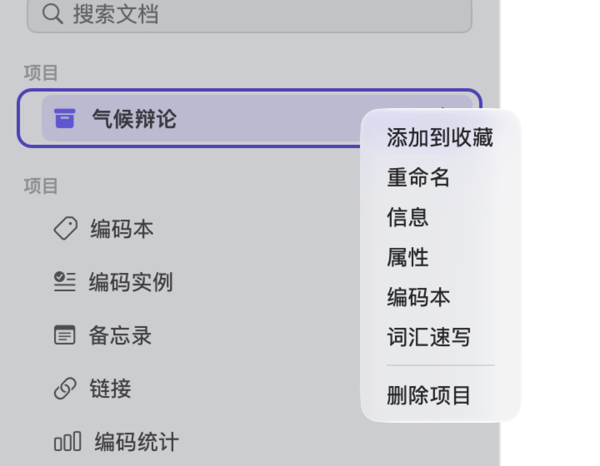
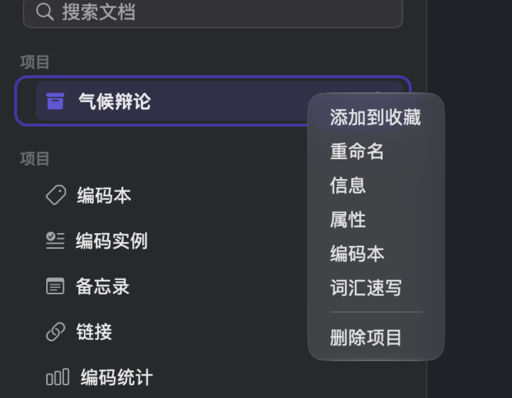
菜单栏的项目菜单中，大多数命令要么作用于当前项目，要么取决于你在导航栏中选中的内容。例如，新建文档集、新建智能文档集和属性作用于当前项目；而文档命令（即重命名、信息、移到分组、添加到文档集、从文档集中移除和翻译）与文档快捷菜单中的同名命令一样，作用于导航栏中当前选中的文档。打开列出项目视图栏的十个视图。编辑智能文档集针对当前标签页中的智能文档集。
删除命令（⌘⌫）作用于你最近一次在导航栏中点按的对象，命令的名称也会相应地显示为删除项目、删除文档集、删除分组或删除文档。删除项目或文档之前，LemmaLoom 会先请你确认。文档集和分组则会直接删除，不经确认。之后可以用编辑 ▸ 撤销（⌘Z）恢复文档集或分组。
项目信息
从项目的快捷菜单中选取信息，即可打开项目信息对话框。它的栏目与新建项目相同，可以用来更改项目的名称、颜色、标签和属性。
名称中填写内容之前，存储按钮一直不可用。颜色会改变导航栏中项目盒子图标的颜色；项目为当前项目时，图标后面的高亮背景也会使用这个颜色。收藏项目在项目列表中的星形同样会使用这个颜色。标签窗口会统计为项目加上的标签，在窗口 ▸ 查询中对所有项目进行查询时，也可以按这些标签查找项目。属性中列出项目中每个属性的名称和类型，每一项末尾都有一个移除按钮（移除属性）。要新建属性，请点按添加属性。
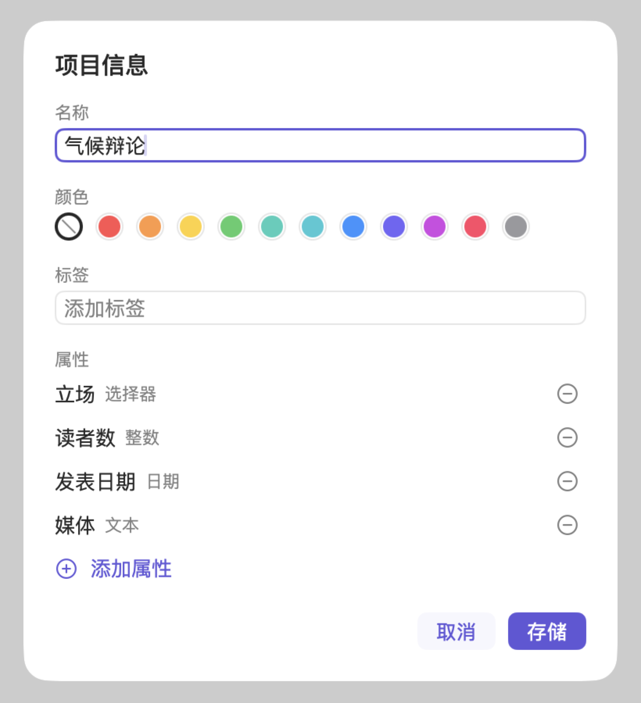
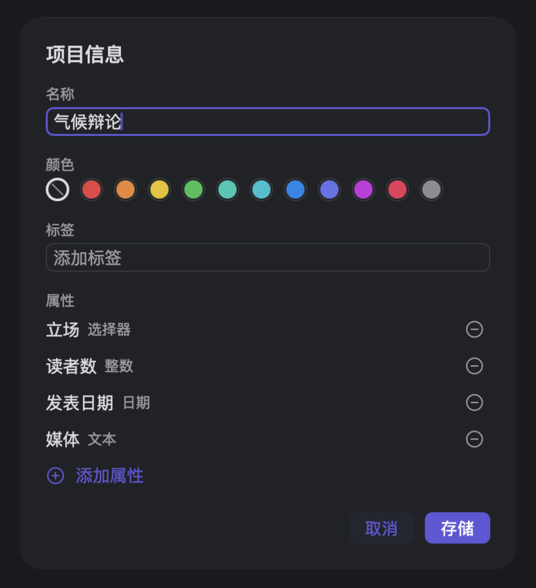
点按存储会一次应用所有更改。这些更改合为一步，用编辑 ▸ 撤销项目信息（⌘Z）可以撤销。
删除项目
- 右键点按项目并选取删除项目。也可以点按项目，然后选取项目 ▸ 删除项目（⌘⌫）。
- 随后出现的提示框会写明项目名称，并警告其中的所有内容都将被删除。点按删除。
项目的所有文档会随项目本身一起删除。这些文档的媒体文件、译文、编码实例、备忘录、链接和书签也会被删除，为整个项目创建的所有内容也是如此。项目的编码和编码集、文档集和分组、属性及属性值同样会被删除。词典和存储在项目中的查询也会一并删除。如果删除的是当前项目，列表中剩下的第一个项目会成为当前项目。
跨项目工作
通常，项目中的所有内容（编码、文档集、分组、属性、词典和已存储的查询）都与其他项目隔离。视图一般一次只涵盖一个项目，例如编码本、编码统计、编码矩阵、词汇速写和速写空间。有些功能可以涵盖你的所有项目。借助这些功能，你可以在不同的研究之间进行比较，或者把以前建好的工具再次用于其他研究。
在窗口 ▸ 查询顶部的范围菜单中选择所有项目，就可以一次查询你所有项目中的原文文档。关于这个范围的详细说明，请参阅第 15 章“构建查询”中的查询窗口和范围。使用规则时，只有在这里才能用项目字段设置条件。也只有在这个范围内，数量或比较才能按项目给结果分组，这时结果列表中会有一个项目列。有些模板也在这个范围内工作，包括按属性统计编码实例、按分组统计修辞和文档表。
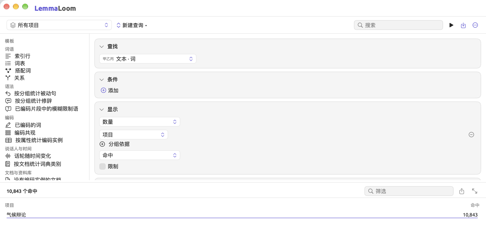
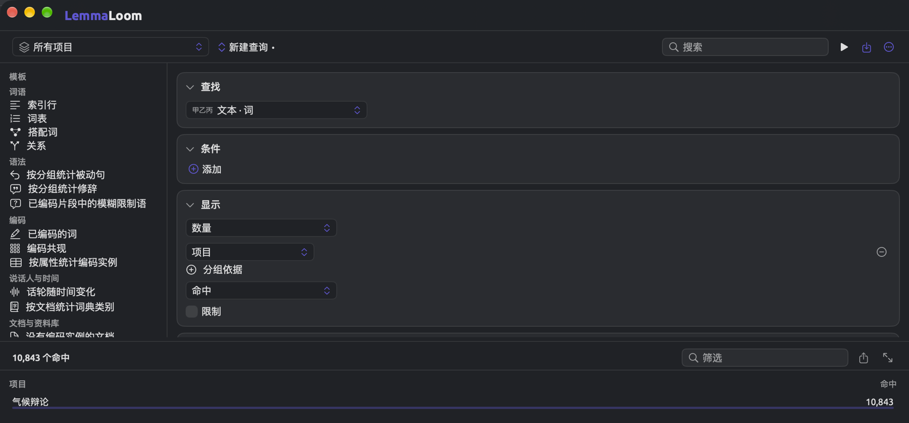
存储查询时，在可用范围中选择所有项目，这个查询就可以在每个项目中使用。以这种方式存储为透镜的查询，可以在任何文档中启用。请参阅第 15 章“构建查询”中的存储查询。标签本来就是这样工作的，它们同时作用于所有项目。一个标签无论出现在哪里（例如多个项目中的“评论”），都是同一个标签。标签既可以加在单个文档上，也可以加在项目上，因此跨所有项目的查询可以找出带有指定标签的文档或项目。关于所有项目共用的标签，详见第 8 章“文档集、分组、标签和属性”中的所有项目共用一份列表。所有项目共用的还有自定义分析器（第 20 章“自定义分析器”）；你在窗口 ▸ 分析器中编写的分析器属于整个资料库，可以在任何项目的文档上运行，跨所有项目的查询也可以统计这类分析器找到的内容。
如果编码本、编码相关的视图或词汇速写需要涵盖几项研究，就应当把这些材料放在同一个项目中，再用文档集、分组或某个属性来区分各项研究。
文档
文档通过导入进入项目。关于各类材料的导入方法，请参阅第 4 章“导入资料”。
在标签页中打开文档
在导航栏中点按一个文档，它会在阅读器正上方的标签页中打开，这个标签页也会成为当前标签页。文档集中列出的文档也是如此。如果这个文档已经在标签页栏的某处打开，在导航栏中再次选中它只会把它现有的标签页设为当前标签页。使用键盘时，可以用上箭头键和下箭头键在导航栏中移动，按下 Return 键打开选中的文档。
项目视图栏、文档集和标签的详细视图也都在标签页栏的标签页中打开，更多信息请参阅本章后文的项目视图栏。只要至少打开了一个标签页，标签页栏就会显示出来；标签页多到一行放不下时，可以左右滚动标签页栏。
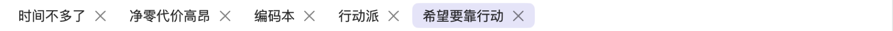
要用键盘在标签页之间切换，请选取窗口 ▸ 显示下一个标签页（⇧⌘]）或窗口 ▸ 显示上一个标签页（⇧⌘[）。在最后一个标签页上继续切换，会回到第一个标签页。右键点按标签页时，快捷菜单中有在新窗口中打开、在分屏浏览中打开和关闭标签页。
选取在新窗口中打开后，文档会转到单独的文档窗口中。文档窗口始终只容纳一个文档，打开第二个文档会替换前一个。对于文档集或标签，在新窗口中打开只适用于显示词汇速写或查询的标签页；对于项目视图栏中的视图，它会打开编码本窗口、词汇速写窗口或查询窗口。在分屏浏览中打开会把你的文档和当前的另一个文档左右并排显示在分屏浏览中。关于分屏浏览，请参阅第 9 章“译文与分屏浏览”。窗口菜单中也有在新窗口中打开和在分屏浏览中打开。从这个菜单调用时，它们的用法有所不同；这些命令作用于当前标签页。此外，那里的在分屏浏览中打开会列出可以放在当前文档旁边的已打开文档。
预览标签页
当你打开一条查询结果，或者在某个文档集或整个项目的词汇速写中显示一处出现位置时，就会出现预览标签页。之后的结果会在标签页栏中的同一位置打开，替换之前的结果。
要保留预览标签页，请点按它，或者用显示下一个标签页或显示上一个标签页命令切换到它。这个标签页会像其他标签页一样保持打开。在导航栏中点按这个文档，效果相同。如果包含结果的文档已经在普通标签页中打开，LemmaLoom 会在那个标签页中显示结果。如果文档在分屏浏览中打开，右侧窗格会获得焦点。
关闭标签页
点按标签页上的 × 会关闭这个标签页。也可以按下 ⌘W（或选取文件 ▸ 关闭标签页）关闭当前标签页。关闭后位于最右侧的标签页会成为当前标签页。
打开分屏浏览时，在右侧窗格中按下 ⌘W 会关闭分屏浏览；在其他位置，⌘W 照常关闭当前标签页。在分屏浏览中，如果关闭左侧的最后一个标签页，右侧窗格中的文档会移到它的位置。
有标签页打开时，选取文件 ▸ 关闭窗口（⇧⌘W）会关闭主窗口。窗口中没有打开的标签页时，关闭窗口会换成文件 ▸ 关闭（⌘W）。这个命令会关闭窗口；如果这是最后一个 LemmaLoom 窗口，LemmaLoom 也会随之退出。
选择多个文档
文档可以成批选择。选中后，命令会同时作用于每个文档。
在文档部分中，按住 ⌘ 键点按一个文档，可以把它加入所选内容。再按住 ⌘ 键点按一次，则把它移出所选内容。按住 ⇧ 键点按，可以选中一整段范围的文档，从你上一次点按的文档一直到这一次点按的文档。这个范围按列表顺序计算，也包括已收起的分组中的文档和原文下方的译文。因此在选择时，请先留意快捷菜单顶部显示的所选文档数量，然后再进行删除。
直接点按任意一个文档，只会选中这一个文档并打开它。在文档集部分中，同样的点按方式也可以选择某个文档集下的文档。
右键点按所选内容中的任意一个文档，会打开快捷菜单。菜单顶部显示所选文档的数量，例如已选择 3 个文档。如果恰好选中两个文档，并排打开命令会把列表中靠上的文档放在主窗格中，把靠下的文档放在分屏浏览中。你可以选取移到分组，从未分组、各个分组和新建分组中选择。选取添加到文档集，可以看到你手动填充的每个文档集，以及从所选文档新建文档集。如果某个文档集已经包含全部所选文档，它在这里不可用。如果所选内容中有译文，添加的是它的原文。导出会把所选文档存储为 LemmaLoom 归档（见第 22 章“交换与导出”）。菜单的最后一项是删除文档（见本章后文的删除文档）。


文档的快捷菜单
在文档部分中右键点按单个文档，会出现以下快捷菜单：
| 命令 | 作用 |
|---|---|
| 在分屏浏览中打开 | 在当前文档旁边打开该文档。如果没有其他文档是当前文档，或者该文档已经在分屏浏览中，这个命令不可用。 |
| 在原文旁边打开 | 仅在译文的快捷菜单中显示。在左侧打开原文，在右侧打开译文。 |
| 重命名 | 把名称变成文本框。 |
| 移到分组 | 把文档及其译文移入某个分组，或者用未分组把它们移出所有分组。 |
| 文档集 | 把文档加入某个文档集，或者用从文档新建文档集以它新建一个文档集。 |
| 信息 | 打开文档信息（见下文的文档信息）。 |
| 翻译 | 翻译该文档。见第 9 章“译文与分屏浏览”。 |
| 导出 | 把文档存储为 LemmaLoom 归档。 |
| 重试索引 | 建立索引失败时出现，位于说明失败原因的那一行下方。 |
| 删除文档 | 确认后删除文档（见本章后文的删除文档）。 |
无论你把原文移到哪里，译文都会随之一起移动，所以请对原文使用移到分组和文档集。如果需要这个文档的另一份译文，请再次翻译原文。在任何文档集下，文档的快捷菜单都以打开开头；在手动填充的文档集中，菜单以从文档集中移除结尾。
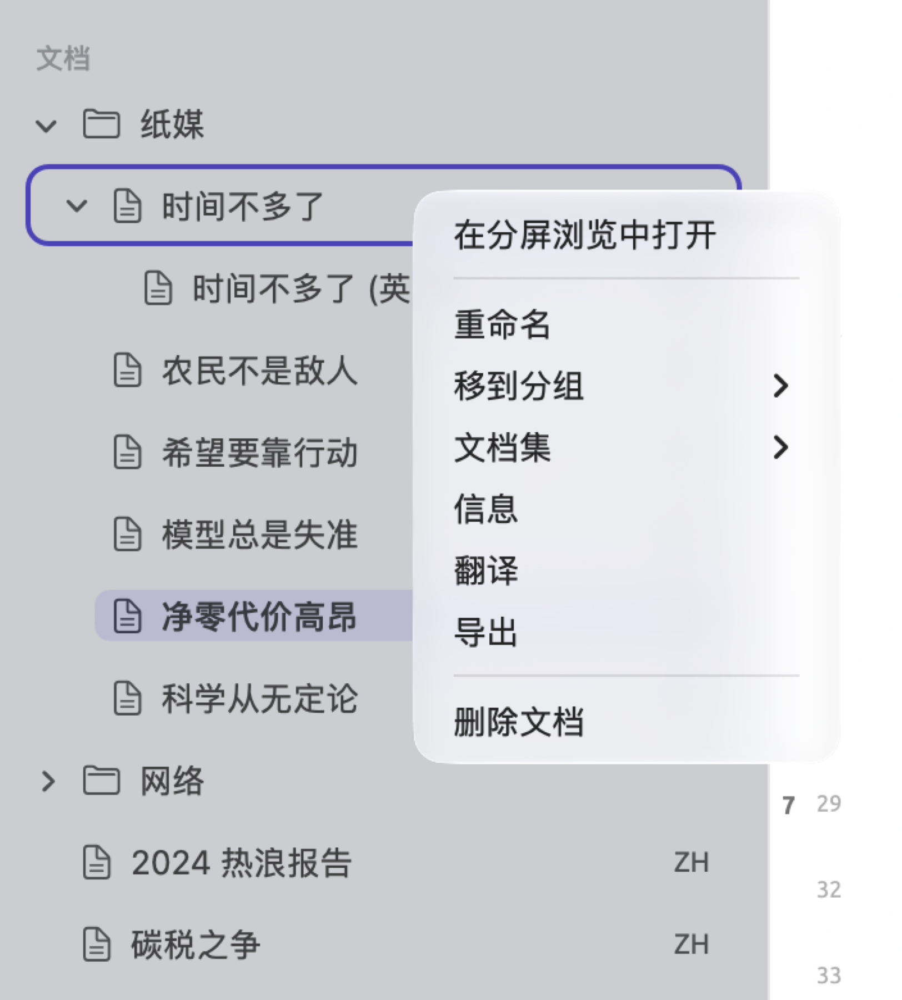
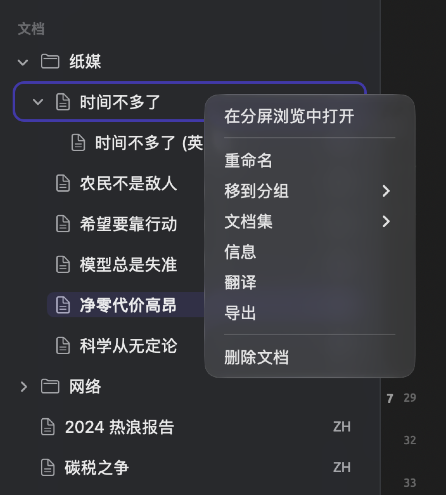
重命名文档
- 右键点按文档并选取重命名。
- 输入新名称并按下 Return 键。
按下 Esc 键会恢复原名，点按别处则保留新名称。编辑 ▸ 撤销重命名（⌘Z）可以恢复原名。你也可以在文档信息中重命名文档。
文档信息
除正文本身以外，LemmaLoom 为文档存储的所有元数据都可以在文档信息中找到。例如，“气候辩论”中“时间不多了”的日期是 2024 年 8 月 21 日，它带有标签“评论”。它在项目四个属性上的值，可以让你对它进行分类，并与项目中的其他文档进行比较。
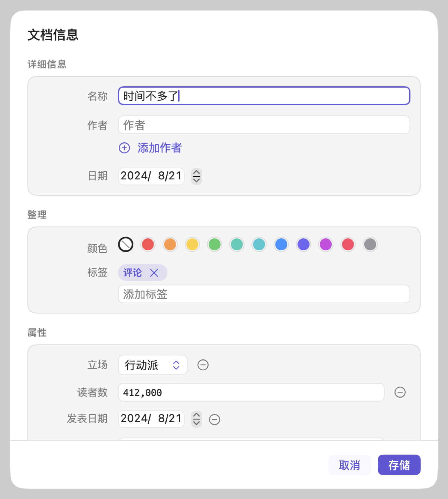
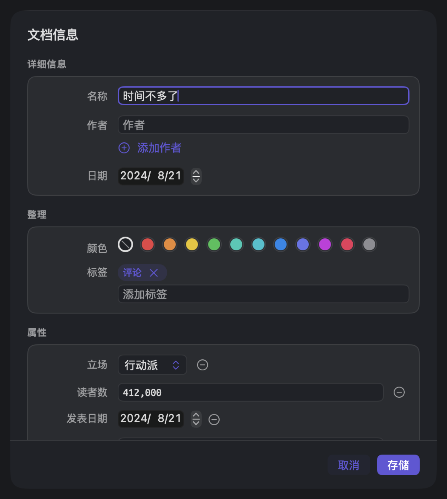
更改文档信息的步骤如下：
- 在导航栏中右键点按文档，选取信息。
- 在详细信息、整理、属性、引用和索引中进行更改。
- 点按存储。
存储会把你的更改作为一次操作应用，编辑 ▸ 撤销文档信息（⌘Z）会同时撤销所有这些更改。取消会放弃你的所有更改并关闭对话框。
详细信息
名称显示在导航栏中、文档的标签页上，以及每一项分析的结果中。名称必须填写，存储才可用。
作者中每行填写一位作者。添加作者会再增加一行。有多行时，每行都有一个移除按钮（移除作者）。存储时，留空的行会被自动删除。
日期是文档录制、写成或发表的日期。
整理
颜色为文档设置十一种可用颜色中的一种，或者设为无颜色。智能文档集和查询可以按颜色筛选文档。颜色会用在导航栏中文档的图标上，也会用在文档标签页的高亮上。
标签一次接受一个标签。输入完一个标签后，按下 Return 键或在后面输入英文逗号，即可结束这个标签的输入。只要输入三个字符（汉字只需一个），就会出现与输入内容相符的已有标签作为自动补全建议，匹配时忽略大小写。例如已有标签“CO2”时，如果你输入 co2，LemmaLoom 会自动加上已有的标签“CO2”。每个标签旁边还有一个 × 按钮，用来移除这个标签。
如果文档有译文，文档和它的译文带有相同的标签。编辑其中一个的标签，其余文档的标签也会随之改变。
属性
这一部分列出这个文档的属性值，所用的控件取决于属性的类型。复选框表示布尔值属性的值，日期选择器表示日期属性，数字控件表示整数和小数属性，文本控件表示文本属性。最后，选择器属性显示为列出其选项的菜单，菜单中也可以选择无。
要为另一个属性添加值，请执行以下操作：
- 在底部的空白栏中输入属性名称。输入时会出现建议。
- 如果项目中还没有这个名称，请选择它的类型。对于选择器，还要输入各个选项，每行一个。
- 点按添加属性，或按下 Return 键。这个属性随即加入列表。
- 输入值。
用这个对话框新建的属性属于整个项目，此时其他文档都还没有这个属性的值。值旁边的移除按钮（移除属性）只从这个文档中删除该属性的值，属性本身仍保留在项目中。
如果名称栏为空、该属性已经在列表中（已添加），或者新的选择器还没有选项（无选项），添加属性按钮不可用。将鼠标指针悬停在添加属性按钮上，可以看到是哪一种原因。
要为多个文档设置某个属性的值，请使用属性窗口，它把所有文档的属性值并排列出。见第 8 章“文档集、分组、标签和属性”中的属性窗口。
引用
引用信息包括出版方、出版物、URL 和 DOI 几栏，记录已发表文档的出处。出版物指文档发表的地方，例如期刊或网站。在内置的“气候辩论”项目中，“碳税之争”的 URL 栏中是导入这个文档时所用的网址。
导入文档和从网页导入对话框中也有同样的这些栏目，导入时就可以全部填写（详见第 4 章“导入资料”）。
智能文档集和查询可以按引用信息以及作者和日期进行筛选。以 REFI-QDA 文件格式导出的项目会把所有引用信息保存在每个文档的描述中。支持 REFI-QDA 标准的软件能够从导出文档的描述中识别这些信息。
索引
对于导入时没有建立索引的文档，这一部分的顶部会显示索引已关闭。那里有一个立即建立索引按钮，用来开始建立索引。关于是否应当关闭索引，请参阅第 21 章“分析与索引”中的导入时不建立索引。
文档采用哪种语法分析，取决于你在语言中的选择。可以选择英语、德语或中文，也可以选择自动，让 LemmaLoom 根据文本内容检测语言。例如，如果检测到的语言是法语，它会与其他选项一起显示在菜单中。存储对语言的更改后，文档会重新建立索引。选择自动时，菜单随后会显示 LemmaLoom 检测到的语言。其他语言的文档仍然可以阅读和编码，这类文档在导航栏中的状态图标显示该语言不支持索引。
分析器列出这种语言的文档可以使用的分析器，包括内置的衔接、元话语和修辞分析器，以及你为这种语言定义的自定义分析器（见第 20 章“自定义分析器”）。每个分析器旁边显示它的状态，可能是完成、已过期、未运行、运行中或失败。如果结果是由分析器的较早版本生成的，或者编辑文档后现有结果已不再覆盖文档的全部文本，结果就会变为已过期。将鼠标指针悬停在状态为失败的行上，可以看到失败原因。
如果分析器的结果显示已过期，或者还没有生成，可以用运行按钮更新结果。在文档完成索引之前，这个按钮一直不可用。废纸篓按钮（移除输出）会删除这个分析器为该文档生成的全部结果；此后重新建立索引时，这个分析器要等你点按运行后才会再次运行。
运行、移除输出和立即建立索引在点按后立即生效，无需再用存储确认。
从索引中排除下的模式可以让语法分析跳过特定的文本，例如转写文本中的时间戳和标明说话人的名称。匹配的文本仍然显示在阅读器中，你也仍然可以在其中创建编码实例。
模式要用正则表达式的写法来定义，这是一种简洁描述某类文本的方式。例如 \[\d+:\d+\] 表示 [12:04] 这样的时间戳，其中 \d+ 匹配一个或多个数字，\[ 和 \] 匹配方括号本身。它与预设模式时间戳 [mm:ss] 相同。
在栏中直接输入模式，然后点按添加或按下 Return 键。预设提供五个预先定义的模式，即时间戳 [hh:mm:ss]、时间戳 [mm:ss]、说话人名称、网址和电子邮件地址。它们后面是你在设置中存储的模式（见第 24 章“设置与外观”）。如果某个预设已经在列表中，它在预设中不可用。模式说话人名称匹配 Speaker 1: 这类带编号的说话人名称；对于有名字的说话人，应当自己编写模式，例如 (主持人|活动人士|怀疑论者)：。各个备选项之间用竖线分隔。
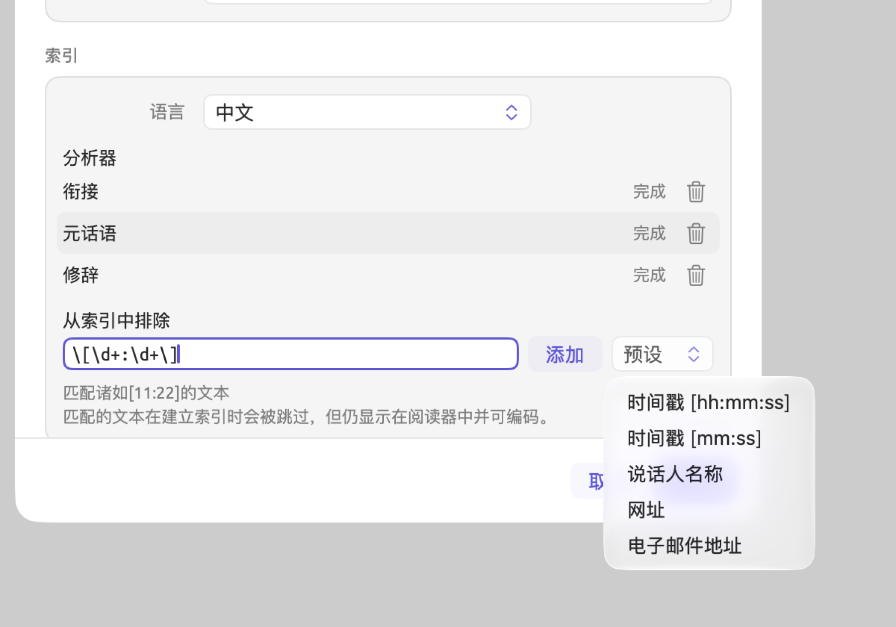
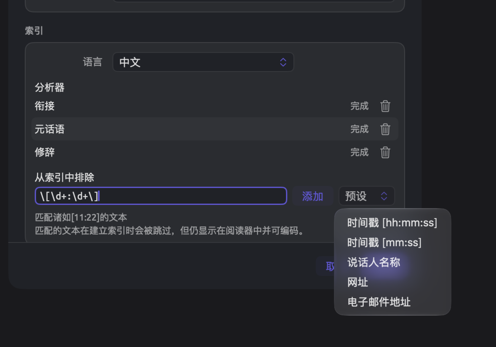
你定义的每个模式下方都有一行形如匹配诸如……的文本的文字，给出一段与它匹配的示例。如果有效的模式无法给出示例，它下方会显示有效模式。你输入时，栏的下方也会显示同样的一行。如果模式无效，LemmaLoom 会在下方显示无效模式，添加随之保持不可用。
每个模式所在行的末尾都有一个移除按钮（移除模式）。点按存储时，栏中如果还有有效的模式，也会一并添加。存储对模式的更改后，文档会重新建立索引。
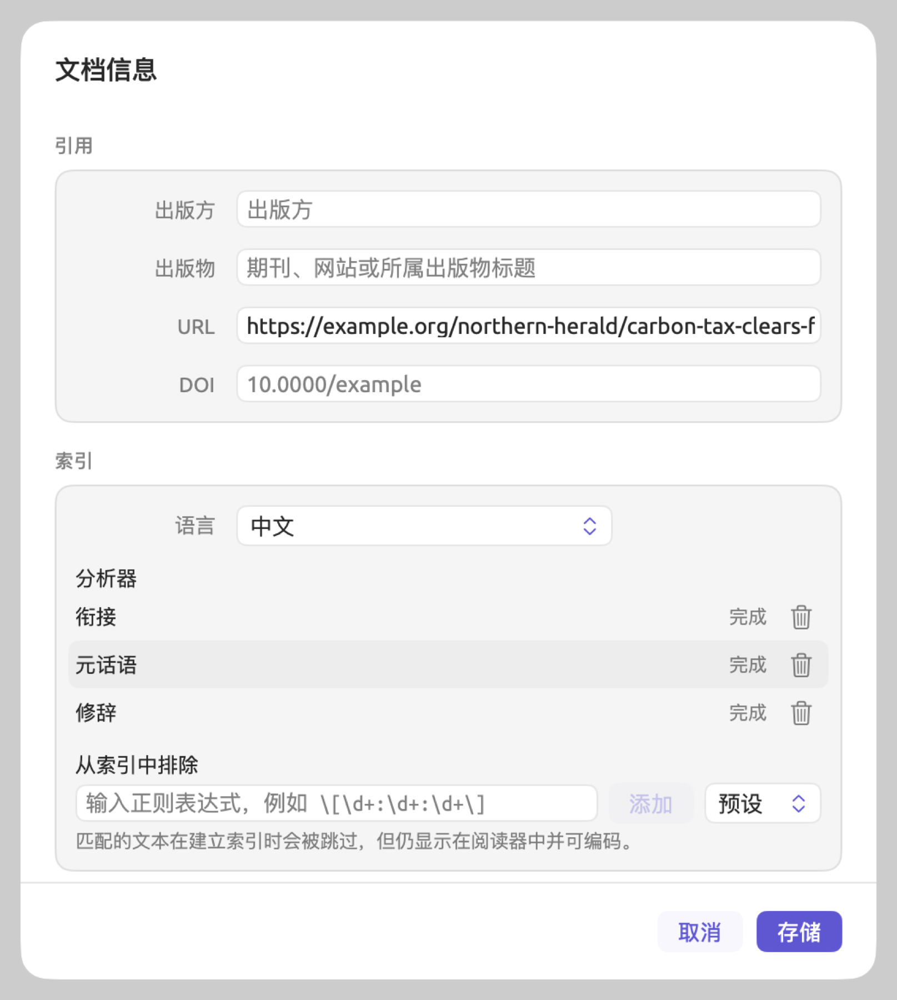
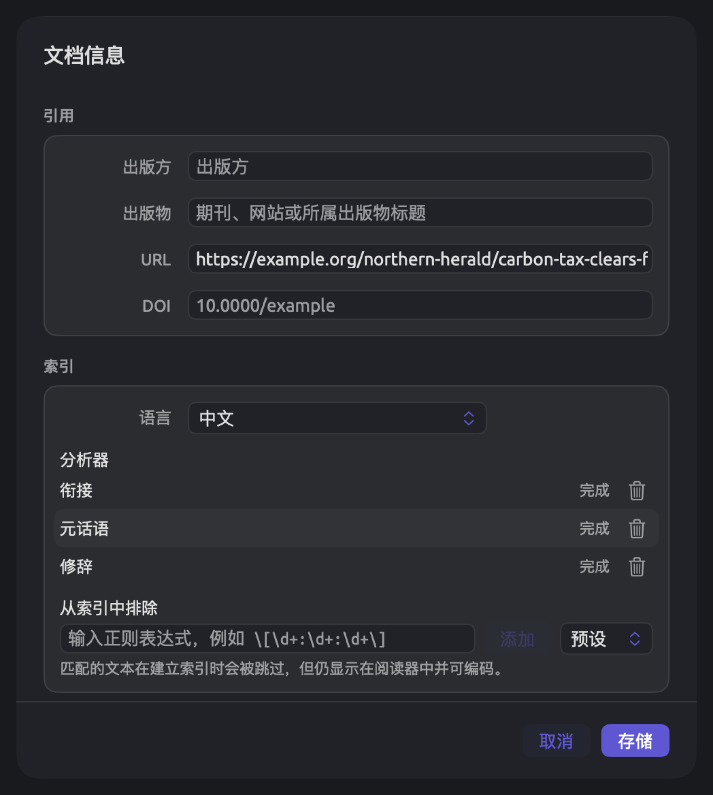
源文件
LemmaLoom 会记录文档的来源，可能是源文件的名称，也可能是网页地址。智能文档集和查询中有两个字段用到这项元数据。例如，你可以用源文件找出从名称含有 报告 的文件导入的所有文档。文档的格式可以是文本、PDF、网页、音频或视频。如果文档来自音频或视频录音，它的格式取决于它来自哪种媒体。对于来自 REFI-QDA 项目的文档，源文件为空；如果它们不是录音，格式为文本。
删除文档
- 右键点按文档并选取删除文档。要删除多个文档，请先选中它们（见本章前文的选择多个文档），然后选取删除文档。在导航栏的文档下选中文档后，选取项目 ▸ 删除文档（⌘⌫）效果相同。
- 随后出现的提示框会写明文档名称或文档数量，并警告其中的所有内容都将被删除。点按删除。
删除文档会移除它的文本、媒体文件和语法分析，它的编码实例、备忘录、链接、书签和属性值也会被移除。适用范围为这个文档的编码会随之移除，见第 7 章“编码”中的编码的适用范围。包含这个文档的所有文档集都会把它移出。如果有只为这个文档存储的查询，它们会变为项目级的查询。删除原文时，它的译文也会被删除。单独删除译文时，适用范围为这份译文的编码会移到原文上。如果误删了文档，可以用编辑 ▸ 撤销删除文档（⌘Z）恢复，一次删除了多个文档时也是如此。上面提到的所有内容都会随文档一起恢复，索引会在后台重新建立。撤销历史会一直保留到你退出 LemmaLoom。关于撤销历史和其他可以撤销的操作，请参阅第 23 章“撤销与重做”。
分组
分组是用来整理文档的容器。每个文档只能属于一个分组，译文则总是与原文在同一个分组中。“气候辩论”有“纸媒”和“网络”两个分组，它们按照文档是刊登在纸质媒体上还是发表在网上来给文档分类。这些分组是为了方便浏览列表，“气候辩论”中的比较依靠的是属性“立场”和文档集。
文档按创建时间的先后列出分组，不属于任何分组的文档列在所有分组之后。每次打开 LemmaLoom 时，所有分组一开始都是收起的；点按分组的展开三角形可以展开它们。
新建分组的步骤如下：
- 选取文件 ▸ 新建分组（⌥⌘N）。一个名为新建分组的分组随即出现，名称处于选中状态。
- 输入名称并按下 Return 键。
选中两个或更多文档后，右键点按其中一个，选取移到分组 ▸ 新建分组。这些文档都会移入新分组，新分组已经展开，你可以立即为它命名。对于选中的单个文档，项目 ▸ 移到分组 ▸ 新建分组的作用与此类似。
要移动单个文档，请右键点按它，然后在移到分组下选取目标分组。如果文档已经属于某个分组，这个分组的选项不可用。选取未分组会把文档移到其他未分组的文档中间。移入的文档会排在新分组的最后。用导入文档对话框导入文档时，可以指定要把文档放入的分组。
右键点按分组，可以使用重命名和删除分组。也可以点按分组，然后选取项目 ▸ 删除分组（⌘⌫）。删除分组后，其中的文档会移出分组，与其他不属于任何分组的文档列在一起。指定了被删除分组的智能文档集条件会失去这个分组，原本为分组 是以下任一 “纸媒”的条件就会变成一个什么都没有选择的条件；这样的条件对每个文档都不成立，之后需要编辑这个智能文档集。编辑 ▸ 撤销（⌘Z）可以撤销之前对分组所做的更改，包括删除。
导航栏中的文档集和标签
文档集下的每个文档集旁边都显示其中的文档数量。手动填充的文档集旁边有堆叠图标，智能文档集旁边则是筛选图标。点按文档集旁边的三角形会列出其中的文档，点按列表中的文档即可打开它。要在单独的标签页中打开文档集，请点按它的名称（见下文的项目视图栏）。新建文档集会新建一个空的文档集，它的名称处于可编辑的文本框中。新建智能文档集则会打开新智能文档集的条件编辑器。每个文档集都有快捷菜单，其中有打开文档集、词汇速写、重命名、编辑（仅适用于智能文档集）、导出和删除文档集。关于文档集的更多信息，请参阅第 8 章“文档集、分组、标签和属性”。右键点按手动填充的文档集中的文档，会显示从文档集中移除。如果在这个文档集下选中了多个文档，它们会全部被移除。
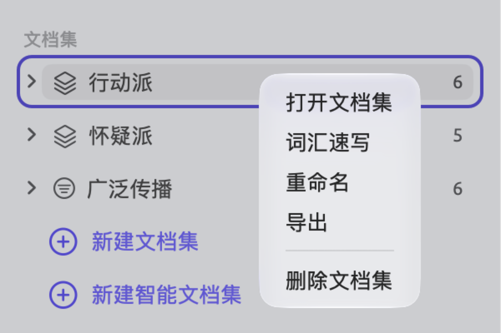
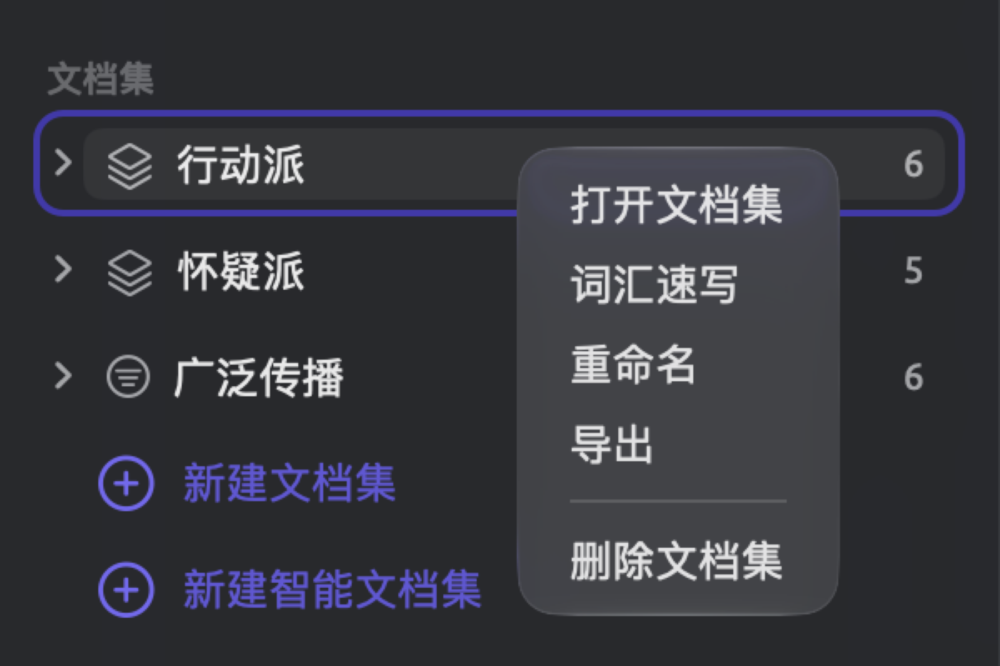
译文与原文属于相同的文档集，文档集中只列出原文。把译文加入文档集时，加入的是它的原文。
标签列在标签下。点按一个标签会打开一个标签页，其中有与文档集相同的十个视图，涵盖带有这个标签的文档。每个标签的快捷菜单中都有词汇速写，用来为它的文档生成词汇速写。快捷菜单中还有重命名和删除标签，它们的作用与下文的标签窗口中相同，两者都会在所有项目中更改这个标签。
标签窗口
在窗口 ▸ 标签中，可以看到你所有项目共用的标签列表，以及每个标签的使用次数。例如，在“气候辩论”项目中，有三个文档带有标签“评论”，即“时间不多了”“净零代价高昂”和“转型谁来买单”。有两个文档带有标签“热门”，即“来自气候罢课的信”和“不必恐慌”。你也可以在这个窗口中重命名、合并和删除标签。
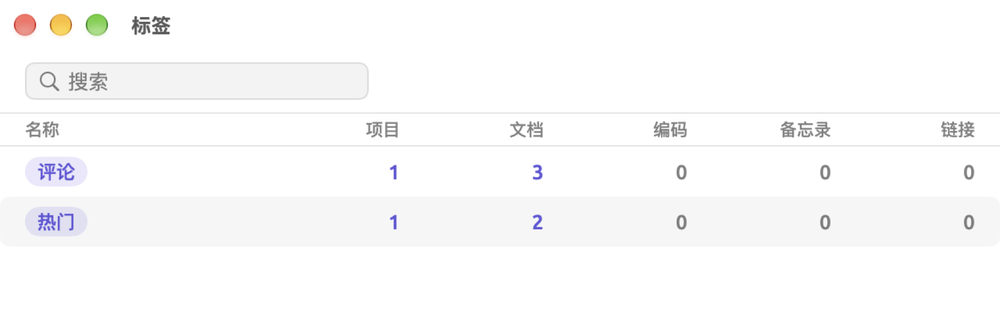
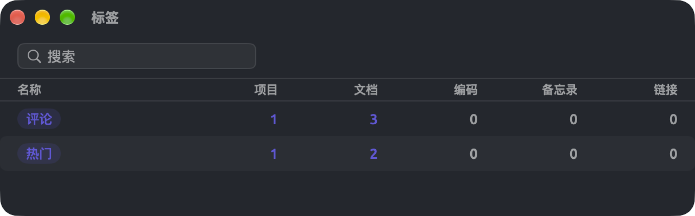
标签窗口在每个标签旁边显示五个计数，分别位于项目、文档、编码、备忘录和链接列中。第一个计数包括使用这个标签的每个项目，无论标签加在项目本身（在新建项目或项目信息中）还是加在它的某个文档、编码、备忘录或链接上；后四个计数则只针对当前项目，所以每个数字都与点按它后得到的结果一致。只在其他项目中出现的标签也会列在表中，它在文档、编码、备忘录和链接列中的计数为 0。文档计数表示有多少个文档带有这个标签，其中一份原文和它的译文只计一次，因为它们带有相同的标签。在搜索中输入名称的一部分，可以筛选标签。标签不区分大小写，“CO2”与“co2”被视为同一个标签，窗口显示较常见的那种写法。
点按标签可以选中它，连按两次或按下 Return 键会在主窗口的标签页中打开它。在导航栏的标签下点按一个标签，效果完全相同。每个大于零的计数都可以点按。点按文档计数会在新标签页中打开带这个标签的文档，与连按两次这一行的效果相同；点按编码计数会把当前项目的编码本筛选为只显示带这个标签的内容；同样，点按备忘录和链接计数会筛选备忘录和链接视图。点按视图顶部标签上的 ×（移除筛选）即可重新显示全部条目。点按项目下的计数会列出使用这个标签的项目，选取其中一个即可把它设为当前项目。
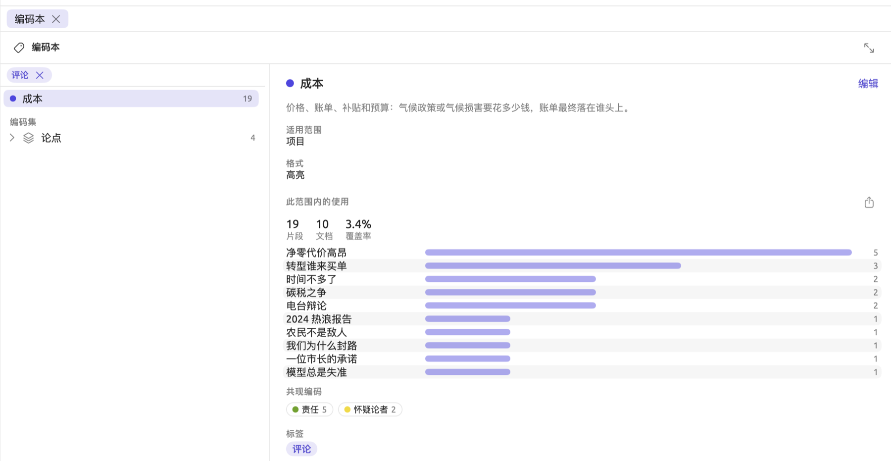
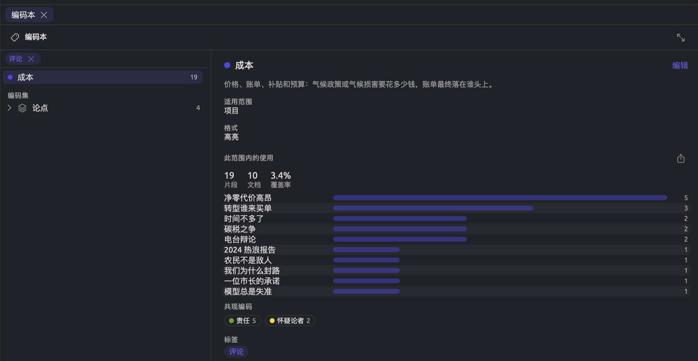
重命名标签的步骤如下：
- 右键点按标签并选取重命名。
- 输入新名称并按下 Return 键。按下 Esc 键则取消。
重命名标签后，所有带这个标签的项目、文档、编码、备忘录和链接都会使用新名称。智能文档集的条件和查询的规则中凡是指定了这个标签的，也都会相应更新。如果这个标签在某个标签页中打开，该标签页会使用新名称。如果把一个标签重命名为另一个标签的名称，两个标签会合并，使用后者的名称。
从标签的快捷菜单中选取删除，即可删除这个标签。这个标签会从所有项目中带有它的对象上删除。主窗口中显示这个标签的标签页会自动关闭。
编辑 ▸ 撤销重命名标签（或编辑 ▸ 撤销删除标签，⌘Z）可以撤销你最近一次重命名或删除。标签窗口为当前窗口时，这个命令可用。
项目视图栏
项目视图栏用来处理整个项目。导航栏的项目部分中有十个详细视图，每个视图都涵盖当前项目中的所有文档。点按后，这些视图会在文档旁边的标签页中打开，标签页以视图命名（例如编码统计）。
如果你只想查看项目中的某个特定子集，就要打开你选择的文档集或标签。这样会打开同样的十个详细视图，但只涵盖这个子集中的文档。在“气候辩论”项目中，打开“行动派”文档集后，这十个视图只涵盖其中六篇行动派文本。这些子集的标签页会显示子集的名称和文档数量，标签页中还有一排按钮，每个按钮代表一个视图。默认显示编码本视图，点按其他任何按钮即可切换到相应的视图。如果窗口宽度不够，这些按钮会换成一个菜单。
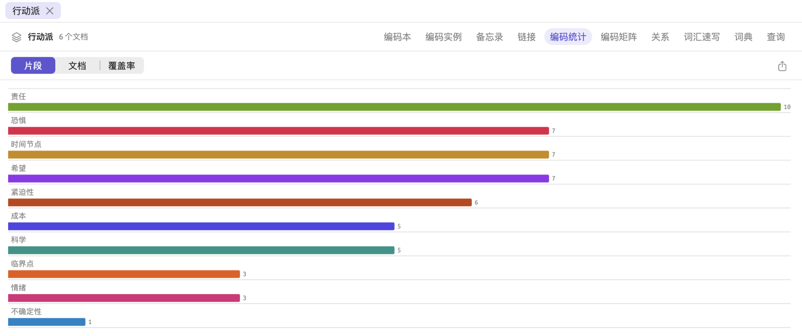
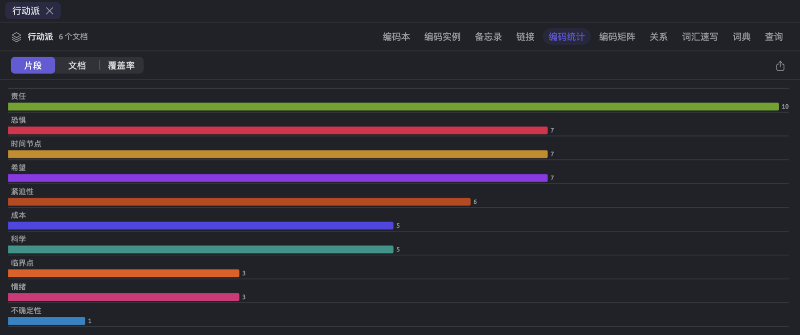
| 视图 | 显示的内容 | 详见 |
|---|---|---|
| 编码本 | 编码树，以及每个编码的编码片段数。对于选中的编码，显示它的说明，它在范围内的编码片段、文档和覆盖率，使用它的文档，以及与它同时出现的编码。 | 第 7 章“编码” |
| 编码实例 | 范围内的每个编码片段，以及它的编码和所在文档。你可以搜索和筛选这个列表，也可以在文档中打开某个编码片段。 | 第 13 章“编码分析” |
| 备忘录 | 范围内的备忘录，以及每条备忘录所属的文档和编码。 | 第 7 章“编码” |
| 链接 | 范围内文段之间的链接，以及每条链接的两端。 | 第 7 章“编码” |
| 编码统计 | 每个编码的使用次数和覆盖的文本量，可以按属性细分。 | 第 13 章“编码分析” |
| 编码矩阵 | 一张表格，每个编码占一行，显示每个编码在每个文档中的使用次数。列分组依据可以按属性、分组、语言或格式合并文档。 | 第 13 章“编码分析” |
| 关系 | 一张表格，显示各个编码在同一文段中重叠的次数。 | 第 13 章“编码分析” |
| 词汇速写 | 对于你选定的词，显示它在整个范围内与哪些词搭配，并按语法关系分组。 | 第 12 章“词汇速写” |
| 词典 | 项目的词典，以及每个类别的词语在范围内的计数。 | 第 19 章“词典” |
| 查询 | 查询构建器，在范围内的文档中搜索。 | 第 15 章“构建查询” |
要在阅读器旁边的单独窗口中打开一个视图，请使用在窗口中打开。这个按钮上有两个斜向箭头，位于视图上方那一栏的右端。词汇速写会在词汇速写窗口中打开，查询则在查询窗口中打开。其他八个视图都在编码本窗口中打开，这个窗口顶部有一排横向排列的按钮，分别对应全部十个视图。在文档集或标签的标签页中，只有词汇速写和查询可以在各自的窗口中打开。可以使用这个按钮，也可以右键点按标签页本身并选取在新窗口中打开。你还可以选取菜单项窗口 ▸ 编码本，或者右键点按项目并选取编码本，来打开编码本窗口。